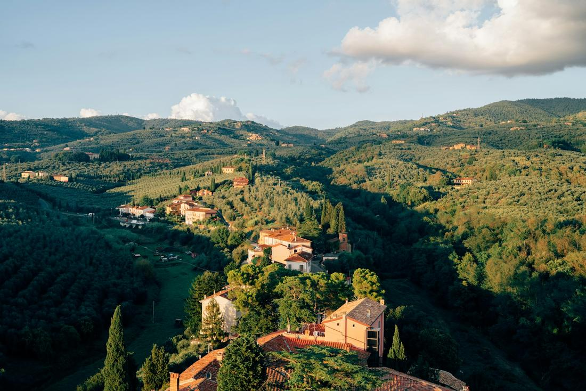
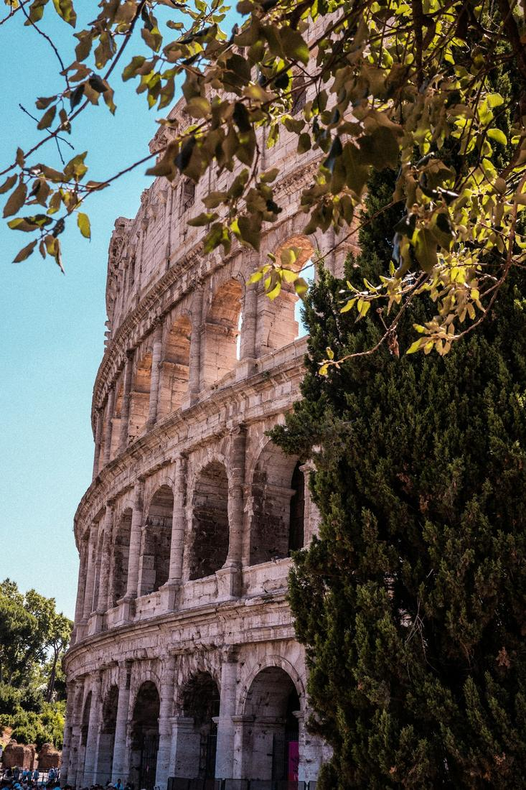

Where ancient ruins, rolling vineyards, and cliffside villages turn every single day into a highlight reel.
Italy is where I send clients who want a trip that hits every note: history, food, romance, and views that stop you mid-sentence. From the marble ruins of Rome to the sun-bleached cliffs of the Amalfi Coast to the rolling vineyards of Tuscany, this is a country built for slow mornings, long lunches, and evenings that never quite want to end. I have sent honeymooners, multi-generational families, and solo travelers here, and every single one comes home saying the same thing: when can we go back?
What makes Italy so special as a travel advisor's destination is how differently each region delivers that magic. Rome hands you empires and espresso in the same afternoon. Tuscany slows you down with vineyard roads, stone villages, and wine that tastes like the hillside it grew on. The Amalfi Coast trades all of that for lemon groves, pastel towns stacked on cliffs, and a boat ride you will replay in your head for years. You truly cannot see it all in one trip, which is exactly why I love building custom itineraries around it.
As your travel advisor, my job is to take all of that and turn it into a day, or several, that flows exactly the way you want to experience Italy, whether that is wine country, ancient Rome, or coastal cliffs. Here are three excursions I love arranging for clients heading to Italy, each one built from real, well-loved experiences I can combine and customize into the perfect day for your trip.

There is nothing quite like your first glimpse of the Amalfi Coast from the water, and that is exactly how I like to build this day. We start in Sorrento, where a private or small-group boat carries you along the coastline toward Positano, the cliffside village of stacked pastel houses that practically tumbles into the sea. From there, it is on to the town of Amalfi itself, where you can wander to the striped Duomo di Sant'Andrea and duck into a shop for real limoncello made from the coast's famous lemons. The day wraps in Ravello, perched higher above the water, where the gardens of Villa Rufolo and Villa Cimbrone open onto some of the most photographed views in Italy, the kind where the Mediterranean seems to stretch on forever. Depending on the pace you want, we can add in a swim stop in a quiet cove, a seafood lunch overlooking the water, or extra time in whichever village steals your heart. This is the excursion I recommend most for couples and anyone who wants that unforgettable, pinch-me Amalfi Coast day they have seen in every photo, except this time, they are the ones in it.

This is the day I build for clients who tell me they want to feel Italy rather than just see it. We leave Florence behind and head into the Tuscan countryside, where the road itself, lined with cypress trees and vineyard rows, is half the experience. First stop is usually San Gimignano, the medieval hill town famous for its stone towers and, unofficially, for once being home to a world gelato championship winner, so a stop for a scoop is basically required. From there, we head to a family-run vineyard for a proper Chianti or Vernaccia tasting alongside a Tuscan lunch of pecorino, cured meats, and olive oil pressed just down the hill. The afternoon usually lands in Siena, where the fan-shaped Piazza del Campo and the striped marble Duomo make for a slower, wine-warmed wander before heading back. I can build this as a half day or stretch it into a full one with an overnight in a countryside villa, but either way, this is the Tuscany people picture when they dream about Italy, and I love that I get to make it real for them.

Rome deserves more than one day, but if I only have one to work with, this is how I spend it. Mornings start at the Colosseum, walking the same stones where gladiators once fought, before moving into the Roman Forum and up Palatine Hill for a look at what is left of the emperors' palaces. Depending on your interests, we can swap in the Vatican Museums, the Sistine Chapel, and St. Peter's Basilica instead, or fit in both if we start early enough. Once the history-heavy morning winds down, I love sending clients across the river into Trastevere for a food and wine walking tour through its cobblestone alleys, think fresh suppli, handmade pasta, local wine bars, and gelato that will ruin you for gelato everywhere else. We usually close the loop with a coin toss into the Trevi Fountain and a wander through the Spanish Steps if there is time left. This combination of ancient ruins in the morning and real, unpretentious Roman food in the evening is exactly the balance that makes Rome unforgettable, and it is one of my favorite days to build for first-time visitors.
Prefer to plan together? I'll build your custom package. Already know what you want? Book instantly through my travel portal.